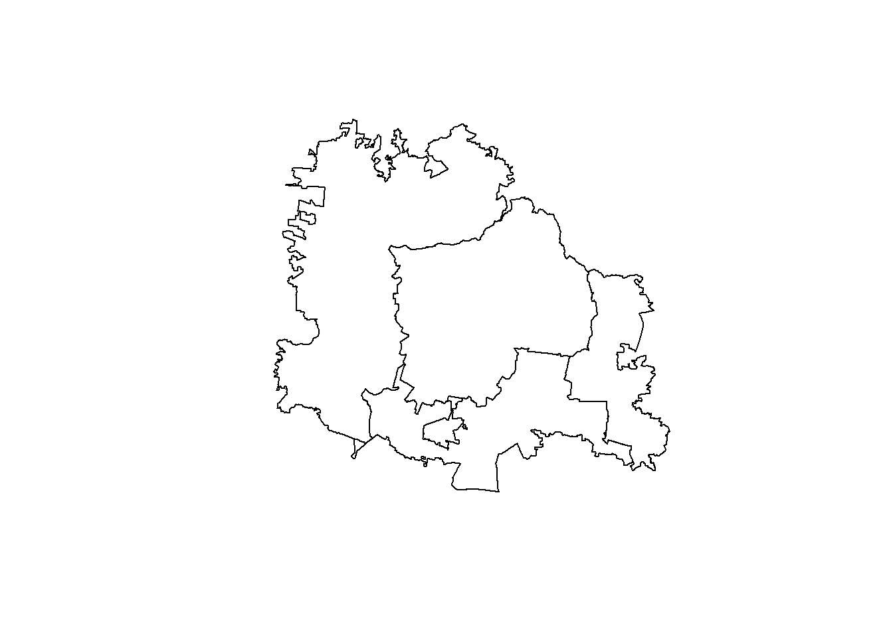

Software & Convenciones
Con el advenimiento de la era del internet, la exponencial la capacidad de las computadoras (software and hardware) y la creciente la disponibilidad software libre para el análisis espacial, ha permitido que más investigadores tengan acceso a las herramientas analíticas. En el top ten para el análisis de datos espaciales, se observan a QGIS, R, Python, GeoDa, SaTScan y GRASS. Actualmente, existe una tendencia a usar R o Python para el análisis espacial. Entre las principales limitantes de ambos lenguajes de programación es que la curva de aprendizaje es lenta y tortuosa. No obstante, lo anterior, cada día más personas están usando ambos lenguajes para el análisis espacial.
En el presente manual se usará R y RStudio para el cálculo de los hotspots. El manual asume que los usuarios tienen experiencia en el uso de R, RStudio y que cuentan con su clave API del servicio de geocodificacion de google (Geocoding API de google). R es un programa de computadora estadístico que proporciona un ambiente rico y variado para la visualización y análisis de datos (espaciales y no espaciales). R se baja gratis del website de Comprensive R Archive Network en https://cran.r-project.org/ y es distribuido con una licencia pública general (GBU). Lo ideal es usar la consola de R, pero es ampliamente recomendado utilizar un ambiente de desarrollo integrado (IDE, integrated development enviroment) para interactuar con R, como RStudio. RStudio se baja gratis en la página de RStudio https://rstudio.com/products/rstudio/.
Los análisis hotspots con el estadístico espacial local Getis&Ord (\(G_{i}^{*}\)) y spatial log gaussian cox process, para la información epidemiologica y entomológica, respectivamente, son implementados en R y se desarrollaron los siguientes paquetes para facilitar su implementación en los servicios de salud de México.
Los paquetes se instalan en la consola de R o RStudio en tecleando lo siguiente:
#devtools::install_github("fdzul/denhotspots")
#devtools::install_github("fdzul/rgeomex")ó
#remotes::install_github("fdzul/denhotspots")
#remotes::install_github("fdzul/rgeomex")Por convención en el texto los paquetes se proporcionaran en negrita y azul marino (ejemplo denhotspots). Las funciones puedes referirse individualmente (extract_ageb) o a través de su paquete (rgeomex::extract_ageb) en cursiva y color azul marino. En el caso de denhotspots::gihi, denhotspots es el paquete y gihi es la función. En los códigos las funciones de los paquetes denhotspots,deneggs, rgeomex y dendata usaran este metodo de applicar la función atravez de : debido a que evita conflictos con otros paquetes que tienen funciones con el mismo nombre pero que realizan diferente función.
Como el documento incluye texto y código, el código estara cirscunscrito en un recuadro con fondo gris como acontinuación se presenta. El símbolo # indica un comentario del código, no tiene efecto en R y como resultado no se correrá la pieza del código.
#devtools::install_github("fdzul/denhotspots")En el código (recuadro gris) a las funciones se les asignará un color azul, a los paquetes un color gris, a los argumentos de la funciones se les asignará un color verde y a los valores de los argumentos se les asignará un color azul.
library(sf)
library(magrittr)
gua <- rgeomex::extract_ageb(locality = c("Zapopan", "Tonalá",
"Tlaquepaque", "Guadalajara"),
cve_geo = "14")plot(sf::st_geometry(gua$locality))